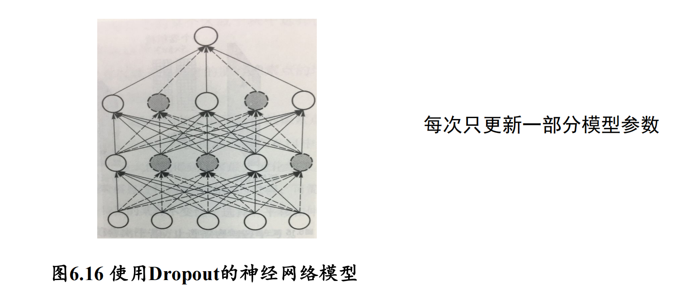

# 深度学习
# 前馈神经网络
- 神经元
- 感知机（多一个激活函数）
- 激活函数: RelU, Sigmoid, Softmax…
- 损失函数: MSE, Cross Entropy…s
- 参数优化: BP, 梯度下降
具体懒得写了
# CNN
-
了解卷积操作和操作之后的结果
-
池化操作（最大池化、平均池化）
卷积层负责提取图像中的局部特征；
池化层用来大幅降低参数量级 (降维)；
激活函数负责非线性化；
全连接层类似传统神经网络的部分，用来输出想要的结果 -
神经网络正则化：为了缓解神经网络在训练过程中出现的过拟合问题，需要采取一些正则化技术来提升神经网络的泛化能力 (generalization)
- Dropout：在训练神经网络过程中，每次参数更新时随机丢掉一部分神经元来减少神经网络复杂度，防止过拟合
 - Batch-Normalization（批归一化）: 通过规范化的手段，把神经网络每层中任意神经元的输入值分布改变到均值为 0、方差为 1 的标准正态分布。防止梯度消失，收敛更快
- L1-Norm & L2-Norm
- Dropout：在训练神经网络过程中，每次参数更新时随机丢掉一部分神经元来减少神经网络复杂度，防止过拟合
# 循环神经网络（RNN）
RNN 对具有序列特性的数据非常有效，它能挖掘数据中的时序信息以及语义信息
为了解决梯度消失问题，长短时记忆模型（Long Short-Term Memory，LSTM）被提出
LSTM：
与简单的循环神经网络结构不同，长短时记忆网络（Long Short-Term Memory，LSTM）中引入了内部记忆单元（internal memory cell）和门（gates）两种结构来对当前时刻输入信息以及前序时刻所生成信息进行整合和传递。
- 输入门 (input gate)、遗忘门 (forget gate) 和输出门 (output gate) 三种 gate
门控循环单元（GRU）是一种对 LSTM 简化的深度学习模型。与长短时记忆网络相比，GRU 不再使用记忆单元来传递信息，仅使用隐藏状态来进行信息的传递。相比于长短时记忆网络来说，GRU 有更高的计算速度。
# 注意力机制
注意力机制对不同信息的关注程度（重要程度）由权值来体现，注意力机制可以视为查询矩阵 (Query)、键 (key) 以及加权平均值构成了多层感知机 (Multilayer Perceptron, MLP)
# 深度生成学习（deep generative learning model）
判别模型 vs 生成模型
变分自编码器 (variational auto-encoder, VAE) 、 自回归模型 (Autoregressivemodels) 与生成对抗网络（generative adversarial network，GAN）等